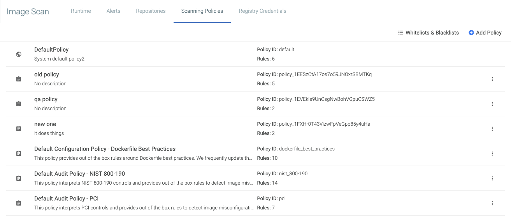
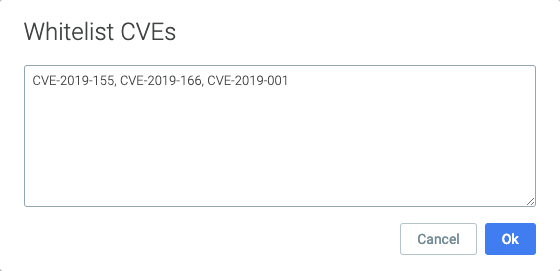
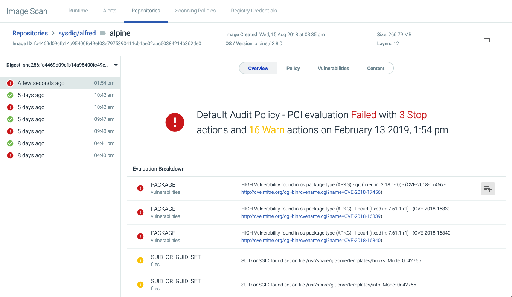
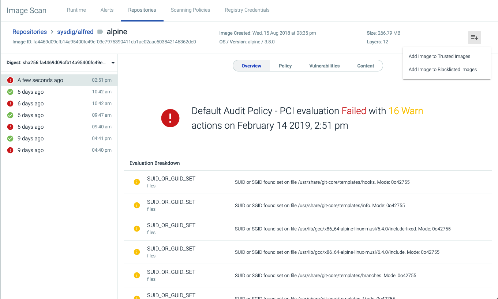

Global Whitelisting
Sysdig Secure allows users to manage CVEs and images that may impact builds by defining them as globally trusted or blacklisted. For example, a low-risk CVE can be globally approved to prevent it from impacting builds that include more critical fixes. Alternatively, specific images can be marked as globally approved or not to ensure they always/never pass a scan.
Contents
Review the Whitelisted/Blacklisted CVEs and Images
To review the current list of whitelisted/blacklisted CVEs and images:
From the I
mage Scanningmodule, navigate to theScanning Policiestab.Click the
Whitelists and Blacklistsbutton.Navigate to the relevant tab (
CVE Whitelist,Global Trusted Images, orGlobal Blacklisted Images).
Whitelist a CVE
There are two ways to whitelist a CVE - from the Scanning Policies tab, and from the Repositories tab.
From the Scanning Policies tab:
From the I
mage Scanningmodule, navigate to theScanning Policiestab.Click the
Whitelists and Blacklistsbutton. Click the
Add CVEbutton.Add each CVE in a comma separated list, then click the
Okbutton to save.
Each item in the list must follow the CVE naming format (CVE-YEAR-ID).
From the Repositories tab:
From the I
mage Scanningmodule, navigate to theRepositoriestab.Select the relevant repository from the list.
Open the relevant image.
Click the
More Options(+) icon beside the relevant CVE. Select
Add CVE to Global Whitelist.
The CVE will now be listed in the CVE Whitelist tab.
Whitelist / Blacklist an Image
Note
If an image is added both in the "Trusted images" list and in the "Blacklisted image" list, the blacklisted one takes precedence.
There are two ways to whitelist or blacklist an image - from the Scanning Policies tab, and from the Repositories tab.
From the Scanning Policies tab:
From the I
mage Scanningmodule, navigate to theScanning Policiestab.Click the
Whitelists and Blacklistsbutton.Navigate to the relevant tab (
Global Trusted Images, orGlobal Blacklisted Images).Click the
Add Imagebutton.Add each image in a comma-separated list, then click the
Okbutton.
A tag name must be valid ASCII and may contain lowercase and uppercase letters, digits, underscores, periods and dashes. A tag name may not start with a period or a dash and may contain a maximum of 128 characters.
To add an image to a list from the Repositories tab:
From the I
mage Scanningmodule, navigate to theRepositoriestab.Select the relevant repository from the list.
Open the relevant image.
Click the
More Options(+) icon at the top of the page: Select either
Add Image to Trusted ImagesorAdd Image to Blacklisted Imagesas needed.
The CVE will now be listed in the Global Trusted Images tab or Global Blacklisted Images tab, as appropriate.
Remove a CVE or Image from the Whitelist/Blacklist
To remove one or more CVEs or Images from the various lists:
From the I
mage Scanningmodule, navigate to theScanning Policiestab.Click the
Whitelists and Blacklistsbutton.Navigate to the relevant tab (
CVE Whitelist,Global Trusted Images, orGlobal Blacklisted Images).Click the
Delete(X) icon beside the relevant CVEs/images
Click
Save.